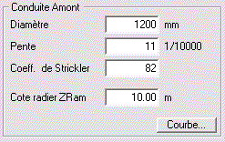
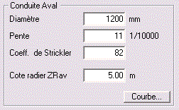

Manuel utilisateur : Les Chutes
Ce module permet de modéliser le fonctionnement hydraulique d'un ouvrage de chute à canalisations circulaires. Il permet en particulier de dimensionner les regards de chute.
L'exemple de calcul de dimensionnement d'une chute qui suit correspond à l'exemple « Démo Chute ». Pour l'ouvrir, il faut cliquer sur ouvrir dans le menu « Chute »,
ensuite sélectionner « Démo Chute » dans la fenêtre qui vient d'apparaître,
et bien sûr cliquer sur le bouton « OK » pour valider votre choix.
Il faut renseigner Hydrouti sur l'ensemble des caractéristiques de l'ouvrage, afin de pouvoir modéliser le fonctionnement hydraulique.
Il faut saisir les valeurs :
du diamètre,
de la pente,
du coefficient de Strickler,
et de la cote du radier ZRam au droit de l'entrée dans le siphon.

Les valeurs choisies pour notre exemple apparaissent sur la figure ci-dessus.
De la même manière que pour la conduite amont, il faut saisir les valeurs :
du diamètre,
de la pente,
du coefficient de Strickler,
et de la cote du radier ZRav au droit de la sortie dans le siphon.

Les valeurs choisies pour notre exemple apparaissent sur la figure ci-dessus.